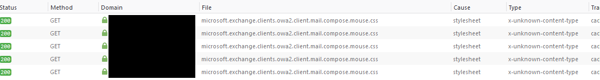

TL;DR: Netscalers have an
Integrated Cachefeature which can cache files even if not licensed. The cache can store corrupted or outdated files. The only way I found to clear the cache in this situation is with an HA failover or a reboot.
I recently had an interesting issue to troubleshoot: A client was having issues with specifically the Outlook Web Access (OWA) on their Exchange servers, but only when accessed from the internet. Composing messages was essentially broken. None of the buttons worked and users could not type text in the body. When accessed internally, everything worked as intended.
A diagram of the topology:
As the diagram shows, both the connections from the inside and outside went through the Netscaler. The only difference was that the external connection went through an additional Content Switching Virtual Server (CSVS).
Jumping in
Without any other descriptions of the symptoms, my guess was that the problems were caused by a rendering error. I opened developer mode in a browser and navigated to the page. There I found only one difference between the developer mode` Console` output of the LAN and WAN connections:
The resource from
"https://example.com/owa/…/microsoft.exchange.clients.owa2.client.mail.compose.mouse.css"
was blocked due to MIME type ("") mismatch (X-Content-Type-Options: nosniff).
There was an issue with the microsoft.exchange.clients.owa2.client.mail.compose.mouse.css style sheet loading when accessing OWA over the internet. Looking at the file name, it now made sense why only the composing feature was broken.
Somehow, the client would receive the file, but the browser couldn't interpret it. The output provided another clue: The MIME-type sent by the server is empty and nosniff was set in the X-Content-Type-Options. nosniff tells browsers to not read the file headers of style sheets and scripts to infer its type. This is done for security purposes.
This could be verified by looking at the Network tab, which shows the browser trying to load the style sheet multiple times and blocking it as a result of the empty MIME type.

This was puzzling. The internal connection and the content switching servers both used the same Load Balancing Virtual Servers (LBVS). The issues reported by users did not appear when communicating with the LBVS directly. The problem clearly had to do with the CSVS and how it transferred data, so I switched my focus to the broken file.
Locating the cause
Upon closer inspection, there was a strange difference between the two scenarios. On the LAN side, the servers transferred 4kb of (uncompressed) data. Externally only a measly 800 bytes were transferred. The reverse-proxy functionality of appliance seemed to be mangling the data.
Looking at the headers in developer mode, I noticed two peculiar things:
- The response header for the CSS file the
Viaheader field set toNS-CACHE-10.0: 251. - The value of the
X-FEServerheader field (added by Exchange) showed that the CSS file was always presented by the same server. This was not the case internally. Now I finally had something to go on.
After some searching online, it turned out that Netscalers do have a caching feature (Integrated Cache), but it needs to be licensed. Well, these devices didn't have the feature licensed, but seemingly they were still caching. While scratching my head, I found this forum post. This gave me the impression that the caching feature is enabled by default, but unmanageable if not licensed.
This required me to change the topology in my head to something more akin to this:
All the pieces started falling into place. I'm still not 100% sure what happened. At a certain point in time, while the file was being transferred from the Exchange server to the Netscaler, the transfer must have failed (see the highlighted area below). This failure was cached by the Netscaler and sent to all clients requesting the file. Due to the fact that it was a partial file with no MIME data, the file wasn't even opened by the browser as nosniff was set.
Note: I don't know the inner workings of Netscalers; the flow described below is a guess, inferred from observations. It may well be that the cache is between the CSVS and LBVS or even in front of the CSVS.
An annoying fix
The problem was now identified, but I still had an issue: How to fix this? Clearing the cache is the obvious solution, but if the Integrated Cache feature is not licensed, there is no way to empty it with a command or via the GUI.
The only two options I could find are to perform a failover or to reboot the Netscaler, which both clear the cache.
After clearing the cache, the file finally loaded correcly and OWA functionality was restored.